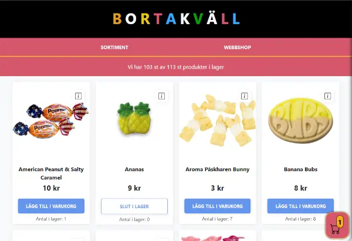
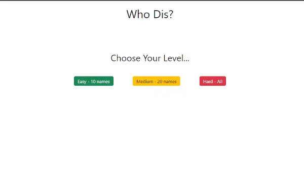
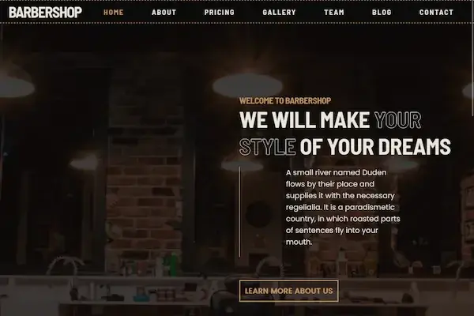
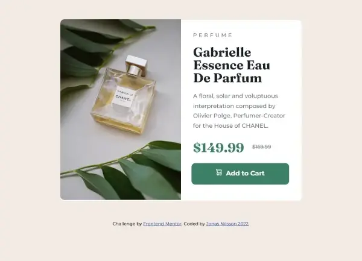
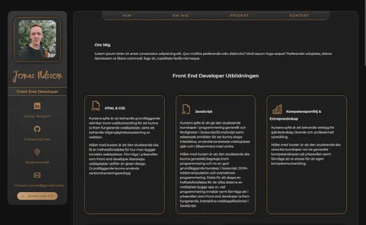

Utbildar mig till front end developer för att jag vill vara med att utveckla för framtiden. Jag kom till en punkt i livet där jag kände att det är dags att byta karriär och jag har alltid haft ett enormt intresse för teknik och programmering och bestämde mig för att detta ska bli min nya väg att gå. Jag har ett väldigt driv när det kommer till att lära mig nya saker och i samband med min höga arbetsmoral gör att jag utvecklas snabbt! Min bakgrund som kock gör att jag har lätt för att strukturera upp och överblicka mitt arbete och fokusera på vad som behövs.
>
_
J
o
n
a
s
_
N
i
l
s
s
o
n
Front End Developer student
OM MIG
Mina Kunskaper
- Senmantisk HTML
- CSS / SASS
- JavaScript
- Typescript
- Vite
- Git bash - Github
- node.js - npm
- Netlify
- Agilt - Scrum
Front End Developer Utbildningen
är en 2 årig yrkeshögskoleutbildning hos Medieinstitutet i Malmö som har kurser inom HTML/CSS, Javascript, Typescript, React, UX/UI, Gränssnittsdesign, Agila projekt, API utveckling, arbetsmetodik för utvecklare och LIA-praktik.
HTML & CSS
Kursens syfte är att behandla grundläggande tekniker inom webbutveckling för att kunna ta fram fungerande webbplatser, samt att behandla tillgänglighetsanpassning av webben.
Målet med kursen är att den studerande ska få en helhetsförståelse för hur man bygger korrekta webbplatser. Förmåga i yrkesrollen som Front end developer återskapa webbplatser utifrån en given design. Grundläggande kunna använda versionshanteringsverktyg
JavaScript
Kursens syfte är att ge den studerande kunskaper i programmering generellt och färdigheter i Javascript/EcmaScript samt relaterade områden för att kunna skapa interaktiva, användarcentrerade webbplatser själv och i tillsammans med andra.
Målet med kursen är att den studerande ska kunna generella begrepp inom programmering och ha en god grundläggande kunskap i Javascript, DOM-manipulation och eventdriven programmering.
Kompetensportfölj & Entreprenörskap
Kursens syfte är att behandla verktyg för självledarskap, lärande och professionell utveckling.
Målet med kursen är att den studerande ska utveckla kunskaper om de generella kompetenskraven på yrkesrollen samt förmåga att ta ansvar för sin egen kompetensutveckling.
API Utveckling
Kursens syfte är att behandla grundläggande tekniker inom webbutveckling för att skapa webbplatser där information kan lagras, hanteras, analyseras och presenteras.
Målet med kursen är att den studerande ska få en helhetsförståelse för användarflöden i webbapplikationer, kunna hantera och lagra information om användare samt förmåga att i yrkesrollen som Front end developer ta fram fungerande, databasdrivna webbapplikationer. Efter kursen ska den studerande kunna genomföra back end utveckling.
LIA - Lärande I Arbete
Kursens syfte är att förbereda för ett självständigt utövande i yrkesrollen som Front End Developer.
Målet med kursen är att den studerande ska utveckla specialiserad yrkespraktisk kompetens inom yrkesrollen Front End Developer.
Mina Projekt

Bortakväll, Grupparbete som innehåller bla async typescript och get/post från api.
Quiz, Who Dis? JavaScript inlämningsuppgift.


HTML & CSS Kursens första inlämningsuppgift.
Projekt från Front End Mentor.

Första CV/Portfolio-sida.